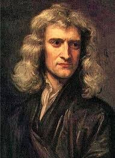
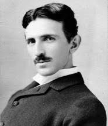
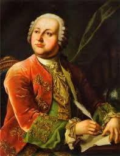
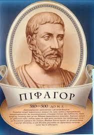
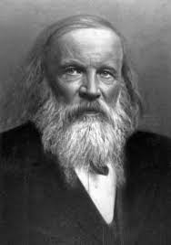
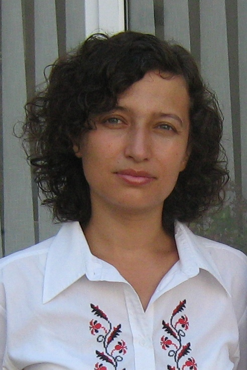
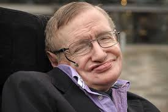

У цій вкладці ви можете знайти багато чого цікавого про великих вчених ,що розміщені на головній сторінці
1.Як ми вже сказали, Альберт Ейнштейн був надзвичайно знаменитий. Тому, коли його на вулиці зупиняли випадкові перехожі, радісним голосом запитуючи, чи це він, вчений нерідко говорив: «Ні, вибачте, мене постійно плутають з Ейнштейном.
2.Одного разу у нього запитали, яка швидкість звуку. На це великий фізик відповів: «У мене немає звички запам'ятовувати речі, які легко можна знайти у книзі»
3.Цікаво, що в дитинстві маленький Альберт розвивався дуже повільно. Батьки переживали, що він буде відсталим, оскільки добре говорити він почав тільки у 7 років. Вважається, що у нього була одна з форм аутизму, можливо Синдром Аспергера.
4.Добре відома велика любов Ейнштейна до музики. Він в дитинстві навчився грати на скрипці і все життя возив її з собою.
5.Якось раз, читаючи газету, вчений натрапив на статтю, в якій розповідали про те, що ціла сім'я загинула через витік діоксиду сірки з несправного холодильника. Вирішивши, що це непорядок, Альберт Ейнштейн разом зі своїм колишнім студентом винайшов холодильник з іншим, більш безпечним принципом дії. Винахід так і було названо «Холодильник Ейнштейна».
6.Відомо, що великий фізик мав активну громадянську позицію. Він був затятим прихильником руху за громадянські права і заявляв, що євреї в Німеччині та чорношкірі в Америці мають рівні з усіма права. «Зрештою, всі ми люди» - говорив він.
7.Альберт Ейнштейн був переконаним пацифістом і виступав різко проти будь-якого нацизму.
8.Напевно всі бачили фотографію, де вчений показує язика. Цікавий факт, що даний знімок був зроблений напередодні його 72 дня народження. Втомившись від фотокамер, на чергове прохання посміхнутися, Альберт Ейнштейн показав язик. Тепер у всьому світі цю фотографію не тільки знають, але ще і тлумачать кожен по-своєму, надаючи їй метафізичний сенс.
9.Річ у тому, що підписуючи одну з фотографій з висунутим язиком, геній сказав, що його жест адресовано всьому людству. Як вже тут без метафізики! До слова сказати, сучасники завжди підкреслювали тонкий гумор вченого і вміння дотепно жартувати.
1.Відомо, що Ейнштейн за національністю був євреєм. Так ось в 1952 році, коли держава Ізраїль тільки почала формуватися в повноцінну країну, великому вченому запропонували стати президентом. Ясна річ, фізик навідріз відмовився від такого високого поста, пославшись на те, що він вчений, і для управління країною йому бракує досвіду.
2.Напередодні смерті йому пропонували зробити операцію, але він відмовився, сказавши, що «штучне продовження життя не має сенсу». Взагалі всі відвідувачі, які приходили відвідати генія, відзначали його абсолютний спокій, і навіть веселий настрій. Він чекав смерті, як звичайного явища природи, наприклад дощу.
3.Цікавий факт, що останні слова Альберта Ейнштейна невідомі. Він промовив їх німецькою мовою, яку його американська доглядальниця не знала.
4.Користуючись неймовірною популярністю власної персони, вчений деякий час брав за кожен автограф по одному долару. Отримані гроші він жертвував на благодійність.
5.Після одного наукового діалогу з товаришами по цеху, Альберт Ейнштейн сказав: «Бог не грає в кості». На що Нільс Бор заперечив: «Припиніть вказувати Богу, що йому робити!».
6.Цікаво, що вчений ніколи не вважав себе атеїстом. Але він також і не вірив в персоніфікованого Бога. Він заявляв про те, що вважає за краще смиренність, відповідну слабкості нашого інтелектуального усвідомлення природи. По всій видимості, до самої смерті він так і не визначився з цим поняттям, залишившись смиренним запитувачем.
7.Є хибне твердження, що Альберт Ейнштейн був не дуже сильний в математиці. Насправді ж, в 15 років він вже освоїв диференціальні та інтегральні обчислення.
8.Ще один цікавий факт, який знають не всі. Вперше Ейнштейна номінували на Нобелівську премію у 1910 році за теорію відносності. Однак комітет визнав її докази недостатніми. Далі, кожен рік (!), Крім 1911 і 1915 рр., Його рекомендували на цю престижну нагороду різні фізики. І тільки в листопаді 1922 році йому присудили Нобелівську премію миру за 1921 р. Був знайдений дипломатичний вихід із незручної ситуації. Ейнштейну присудили премію не за теорію відносності, а за теорію фотоефекту, хоча в тексті рішення була приписка: «... і за інші роботи в галузі теоретичної фізики». В результаті ми бачимо, що одного з найбільших, як вважається, фізиків, нагородили тільки з десятого разу. З чого б це така натяжка? Вельми сприятливий ґрунт для любителів теорії змов.
9.Чи відомо вам, що особу майстра Йоди з фільму «Зоряні війни» створено на основі зображень Ейнштейна? Як прототип використовувалася міміка генія. Попри те, що вчений помер в далекому 1955 році, він упевнено займає 7-е місце в списку «Заробітку мертвих знаменитостей». Річний дохід від продажу продукції Baby Einstein становить понад 10 млн доларів.
10.Існує поширена думка, що Альберт Ейнштейн був вегетаріанцем. Але це не відповідає дійсності. В принципі, він цей рух підтримував, але сам почав слідувати вегетаріанській дієті приблизно за рік до своєї смерті.
1.У віці 17 років Альберт Ейнштейн хотів вступити до Швейцарської вищої технічної школи в місті Цюріх. Однак він склав тільки іспит з математики, а всі інші провалив. З цієї причини йому довелося йти в професійне училище. Через рік він все-таки зумів скласти необхідні іспити. Коли в 1914 році радикали захопили в заручники ректора і декількох професорів, Альберт Ейнштейн, разом з Максом Борном, вирушили на переговори. Їм вдалося знайти спільну мову з бунтівниками, і ситуація вирішилася мирним способом. З цього можна зробити висновки, що вчений не був з боязкого десятка.
Ісаак Ньютон, син дрібного, але заможного фермера. Батько його не дожив до народження сина. Хлопчик народився хворобливим, тиждень його життя висіло на волоску. Він вижив, був похрещений (1 січня) і названий Ісааком на честь покійного батька.
У 1655 році Ньютона віддали вчитися в розташовану неподалік школу в Грентемі. Ще в шкільні роки Ньютон та його друзі затіяли змагання зі стрибків у довжину. Помітивши, що стрибати краще за вітром, ніж проти нього, Ісаак стрибнув далі від усіх суперників. Пізніше він зайнявся дослідами: записав, на скільки футів вдається стрибнути за вітром, на скільки — проти нього і як далеко він може стрибнути у безвітряний день. Так він отримав уявлення про силу вітру, виражену в футах. Особливу заздрість однокласників викликали іграшки, які робив Ньютон. Він побудував мініатюрний вітряний млин, що викликав захоплення не тільки у дітей, але і у дорослих.
У чотирнадцять років він змайстрував водяний годинник і своєрідний самокат. Годинники були настільки точні, що ними користувалося все сімейство Кларк.
Ісаак Ньютон, як відомо, був членом Палати лордів. Засідання він відвідував регулярно. Однак протягом багатьох років Ньютон не сказав ні слова на засіданнях. Одного разу він все-таки попросив надати йому слово, всі присутн завмерли від очікування, але промова його була така: «Панове, я прошу закрити вікно, інакше я можу застудитися!».
В останні роки свого життя Ісаак Ньютон серйозно взявся за богослов’я та під великим секретом писав власну книгу, про яку висловлювався як про найвеличнішу і найважливішу свою працю. Він вважав, що ця праця повинна рішучим чином змінити життя людей, але з вини улюбленої собаки Ньютона, яка перекинула лампу, сталася пожежа. У результаті, крім самого будинку і всього майна Ньютона, згорів великий рукопис.
Багатобарвний спектр веселки безперервний, за традицією в ньому виділяють сім кольорів. Вважається, що першим вибрав число сім Ісаак Ньютон. Причому спочатку, він розрізняв тільки п’ять кольорів – червоний, жовтий, зелений, блакитний і фіолетовий, про що і написав у своїй ” Оптиці ”. Але згодом, прагнучи створити відповідність між числом кольорів спектру і числом основних тонів музичної гами, він додав ще два кольори.
Ньютон сформулював основні закони класичної механіки, відкрив закон всесвітнього тяжіння, дисперсію світла, розвив корпускулярну теорію світла, розробив диференціальне та інтегральне числення. Ньютон встановив закон опору й основний закон внутрішнього тертя в рідинах і газах, дав формулу для швидкості поширення звукових хвиль.
1725 року здоров’я Ньютона почало помітно погіршуватися, він переселився в Кенсінгтон неподалік від Лондона, де помер уночі, у сні, 31 березня 1727 року. Указом короля Ньютона поховали у Вестмінстерському абатстві.
Винахідник ніколи не спав більше 2 годин на добу. Так, всім відомо, що для нормального відпочинку потрібно не менше 8 годин сну. Але Теслі вистачало й двох. Майже весь свій час він витрачав на наукову діяльність. Один раз, коли він сильно запрацювався, він провів у своєму кабінеті 84 години. При цьому ні на хвилину він не відволікався і не спав.
Тесла пив віскі майже кожен день. Вчений говорив, що цей напій продовжує життя. Правда, його захопленню завадив сухий закон, який був введений в США. Приблизно після цього Тесла відмовився від усіх напоїв, крім води і молока.
У Тесли ніколи не було дружини. Закохувались дівчата в нього десятками, але винахідник ніколи не відповідав взаємністю. Він вважав, що сім'я буде великою перешкодою наукової діяльності. Пізніше, у старшому віці, він зізнавався, що віддав занадто багато часу науці, і часто думав про весілля.
У Тесли не було дома. Звичайно, він не жив на вулиці, але після того, як поїхав від батьків, він завжди жив у лабораторіях. Вже в похилому віці, він жив у різних готелях.
Тесла був шанувальником євгеніки. Це наука про селекцію людей. А якщо точніше, то він вважав, що люди повинні народжувати дітей тільки за спеціальним дозволом. Отримати його можна було тільки спеціально відібраним "племінним" батькам. Все як на кращих фермах.
Будучи вихідцем з простої сім’ї, глава якої заробляв на життя рибальським промислом. Михайло почав допомагати батькові з десяти років, виходячи на промисел в Біле море і до Соловецьких островів. Незважаючи на це він зумів домогтися визнання і за межами батьківщини.
Молодий Ломоносов пішов з дому в 19 років у пошуках просвіти та застосування вже отриманих ним знань, подейкували, що причиною втечі юнака стало вельми вигідне одруження, прихильником якого був батько Ломоносова, але упертий Михайло посмів не послухатися волі батька і пішов з однією торбою в Москву.
На той момент Ломоносов вже мав гарний багаж знань, який дав йому дячок місцевої церкви, що навчав молодого учня грамоті. Ломоносов вступив на навчання в Московську слов’яно-греко-латинську академію, і по неймовірному везінню був направлений на навчання за кордон як один зі здібних студентів, де і отримав священні знання, що дали йому можливість зробити безліч важливих відкриттів. У студентстві Михайло, незважаючи на тягу до знань, часто отримував догани за безладний спосіб життя, але після одруження на Єлизаветі Цільх, повністю занурився в науку і всерйоз зайнявся написанням віршів і од, які згодом зробили серйозний вплив на формування літературного складу.
Крім безлічі значущих відкриттів в галузі фізичних явищ, Ломоносов займався вивченням природи скла і кольору, його рукам належить і видання технології промислового виготовлення кольорового скла.
За свою знамениту оду на честь сходження на престол Імператриці Єлизавети, Ломоносов отримав воістину величезну нагороду, яку йому довелося відвозити, найнявши двох візників, адже премія йому обчислювалася в 2000 мідних монет. Крім розвитку духовного запасу і розуму, Ломоносов дбав і про фізичне здоров’я, він славився незвичайною силою і вельми запальним характером, за що навіть потрапив під варту, яка, втім не тривала довго.
Піфагор – це не ім’я, а прізвисько, дане йому за те, що він висловлював істину так само постійно, як дельфійській оракул. «Піфагор» значить «переконує промовою».
Піфагор математичним шляхом встановив небезпеку 7 місяці вагітності, так як священне число сім впливало на долю. В основі ж буття, вважав він, лежить число 40, тому термін вагітності він обчислював як 7, помножене на 40, – 280 днів.
В результаті першої ж прочитаної лекції до Піфагора приєдналось 2 000 учнів, які не повернулися додому, а разом зі своїми дружинами та дітьми утворили величезну школу і створили державу, названу «Велика Греція», в основу якої були покладені закони і правила Піфагора. У школі Піфагора вперше була висунута ідея про те, що Земля є круглою. Природно, ця ідея суспільством сприйнята не була. Ряд ідей, які згодом зробили справжню революцію в астрономії, були вперше озвучені саме Піфагором.
У 588 році до н. е. Піфагор став чемпіоном 48-х Олімпійських ігор з кулачних боїв.
Релігійні переконання Піфагора грунтувалися на тому, що душі, які не потрапили в рай, переселяються в тварин або тіла інших людей. Тому його учні були вегетаріанцями, їсти м’ясо і приносити криваві жертви богам у вигляді звірів було заборонено. Деякі вимоги релігії Піфагора сприймаються зараз як забавні казуси. Наприклад, піфагорійцям наказувалося ніколи не їсти бобів і не дозволяти ластівкам влаштовувати гнізда під дахами, не торкатися до білого півня.
Піфагор – винахідник важеля.
З дрібних, але цікавих вигадок Піфагора в історії залишилася чашка, що носить його ім’я. Її також називають «кухлем жадібності». Зовні вона виглядає як звичайна чашка, тільки в центрі знаходиться невелика колонка. Коли її заповнюють до певного рівня, то вона такою і залишається. Але у випадку, якщо її наливають до країв, то весь вміст випливає, що пояснюється майстерним використанням гідростатичного тиску. Такі чашки і зараз користуються великим попитом в Греції – це відмінний сувенір і дуже корисна річ для тих, хто не знає міри у вживанні вина.
Краще за все про цього вченого може розповісти лише ця презентація зроблена цим самим вченим.
Прошу подивитися презентацію тому,що на мою думку цей вчений заслуговує на це. вчитель математики Хмельницького ліцею №17; закінчила Київський національний університет ім. Тараса Шевченка, спеціальність - математик, викладач; Педагогічне кредо: "Ліфт до щастя, здоров'я і успіху не працює. Скористайтеся сходами. крок за кроком." (Джо Жирар)
Неймовірний вчитель ,прекрасний вчений і просто чудова людина. 